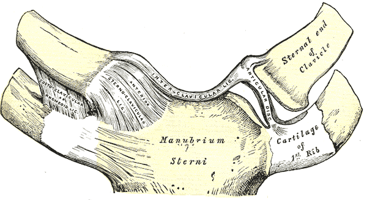
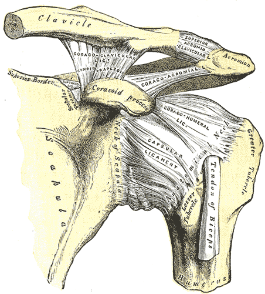
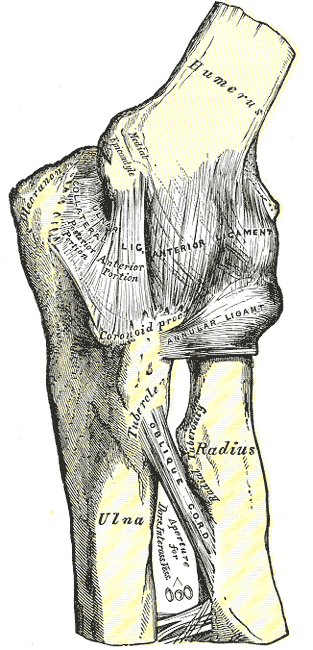
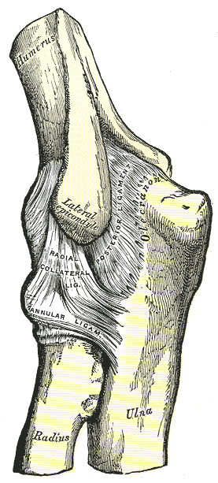
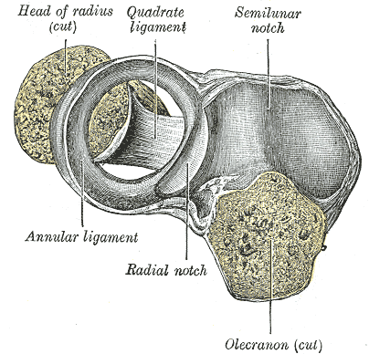
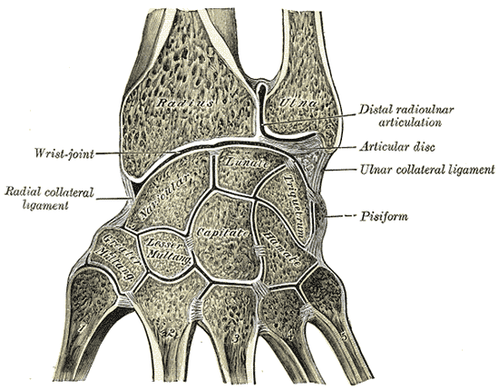
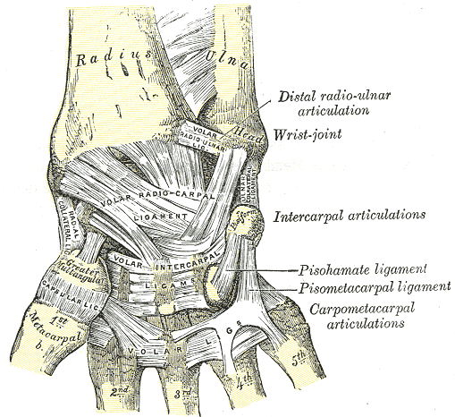
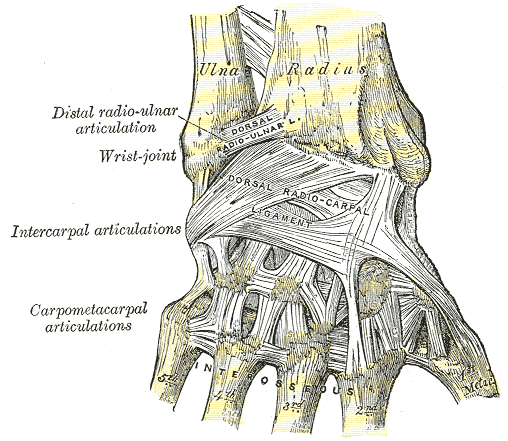

Klouby horní končetiny
ÚVOD · čtení Juncturae membri superioris · bez kvízů · latina v názvech
Jak tenhle úvod funguječtení · bez kvízů
Tohle je úvod do tématu – čti souvislý text, prohlížej obrázky a případně pusť videa. Aktivní procvičování (kvízy, doplňovačky, flashcards) je v samostatných study session částech níže.
Latina v anatomii: u struktur, vazů a pohybů používáme latinské názvy (Terminologia Anatomica). České vysvětlení je v textu. Překladové dvojice česky ↔ latinsky sem nepatří.
Zdroj rozsahu: Patrik Salvét – Juncturae membri superioris (cvičení 6). Typy kloubů, vazy a rozsahy jsou podle něj. Maja Špiritović – Stavební plán horní končetiny doplňuje jen orientaci pletence a funkční souvislosti, které Salvét nejmenuje (subakromiální spojení, canalis carpi, canalis ulnaris). Obecná anatomie kloubu (Maja) je tu jen tam, kde se se Salvétem shoduje. Kde se čísla nebo typ kloubu liší, platí Salvét.
• U každého kloubu si všímej: typ · plochy · pouzdro · vazy · pohyby.
Obecné základy spojenísynoviální / fibrózní / chrupavčité
Salvét dělí spojení na synoviální (nepřímé: štěrbina + pouzdro), fibrózní (vazivové) a chrupavčité (synchondrosis = hyalinní chrupavka, symphysis = vazivová chrupavka).
Kloub (articulatio) je pohyblivé dotykové spojení: plochy povlečené chrupavkou, mezi nimi štěrbina, po obvodu capsula articularis. Cartilago articularis nemá cévy ani nervy, živí ji synoviální tekutina. Pouzdro = membrana synovialis + stratum fibrosum. Pouzdro a vazy hlásí polohu, směr a napětí (propriocepce).
Podle os: uniaxiální (loket, radioulnární), biaxiální (radiokarpální, CMC I), polyaxiální (art. humeri), plošné (AC, intermetakarpální).
Tvar na HK: articulatio spheroidea (GH), sellaris (CMC I; SC je sedlový, funkčně ale trojosý), ellipsoidea (radiokarpální, MCP II–V), ginglymus (humeroulnární, IP), trochoidea (obě radioulnární), plana (AC, CMC II–V funkčně, interkarpální). Art. cubiti je složený kloub. Skapulotorakální spojení je funkční, nepravé.
Pravidlo konvexní–konkávní: konvexní plocha po konkávní → valení a klouzání opačným směrem (GH abdukce, SC elevace, extenze zápěstí, CMC I abdukce); konkávní po konvexní → stejným směrem (flexe lokte, SC retrakce, DRU supinace, flexe MCP a IP, CMC I flexe). Spin = otáčení na místě (flexe GH, hlavička radia při pronaci a supinaci).
Close-packed = největší kongruence, vazy napjaté. Na HK: zápěstí = plná extenze, MCP = flexe, IP = extenze, CMC I = plná opozice, GH = abdukce + zevní rotace.
Mapa kloubů HKod pletence po prsty
Horní končetina je komunikační orgán: úchop a manipulace. Pletenec je neúplný prstenec – vpředu ho uzavírá sternum, vzadu zůstává otevřený a drží ho svaly. S osovým skeletem artikuluje jen clavicula (v SC). Pohyb klíčku se proto promítá do SC i do AC.
Salvét prochází 10 spojení: SC · AC · ST · GH · loket · RU · zápěstí · CMC · MCP · IP.
- articulatio sternoclavicularis (SC)
- articulatio acromioclavicularis (AC)
- skapulotorakální spojení (ST) – funkční, nepravý kloub
- articulatio humeri / glenohumeralis (GH)
- articulatio cubiti (humeroulnaris + humeroradialis + radioulnaris proximalis)
- articulatio radioulnaris distalis + membrana interossea antebrachii
- articulatio radiocarpalis + mediocarpalis
- articulationes carpometacarpales (vč. pollicis)
- articulationes metacarpophalangeae
- articulationes interphalangeae manus
Art. sternoclavicularis (SC)sedlový · „bazální“ kloub HK
Jediné kloubní spojení HK s osovým skeletem (Neumann: „bazální kloub“ HK). Tvarem sedlový (articulatio sellaris), funkčně se chová jako trojosý: 3 stupně volnosti. Pohyb klíčku v SC určuje dráhu lopatky.
Plochy: extremitas sternalis claviculae je v kraniokaudálním směru konvexní a v předozadním mírně konkávní. Jamka: incisura clavicularis sterni + horní okraj chrupavky 1. žebra. Discus articularis (vazivová chrupavka) dělí kloub na mediální a laterální dutinu; plně vyvinutý jen asi u 50 % lidí.
Pouzdro je zesílené vpředu a vzadu, nahoře a dole volnější. Inervace: n. supraclavicularis medialis (povrch), n. subclavius (hloubka). Cévy: a. suprascapularis, a. thoracica interna.
Vazy: lig. costoclaviculare (od chrupavky 1. žebra na impressio lig. costoclavicularis, dva zkřížené snopce) = hlavní stabilizátor, drží vše kromě deprese. Lig. interclaviculare přes incisura jugularis je napjatý při depresi. Lig. sternoclaviculare anterius je napjatý při retrakci, posterius při protrakci.
Pohyby: elevace 35–45° / deprese 10° (konvexní klíček na konkávním sternu: valení a klouzání opačně); protrakce/retrakce 15–30° (v tomto směru je klíček konkávní: valení a klouzání stejně); zadní rotace 20–35° je spin a nejde sama – jen spolu s elevací paže. Close-packed = maximální rotace vzad při maximální elevaci HK a plné zevní rotaci lopatky. Klid: paže podél těla.
M. subclavius táhne klíček k disku a ke sternu a při pohybu pletence ho stabilizuje. Kloub je velmi pevný: při velké síle se spíš zlomí klíček, než se SC vykloubí.

Art. acromioclavicularis (AC)plošný · doladí lopatku
Spojení extremitas acromialis claviculae (oválná, mírně konvexní) s facies articularis acromii (mírně konkávní). Plochy kryje vazivová chrupavka a jsou šikmé. Typ: plošný (articulatio plana), tři stupně volnosti s malými rozsahy. Roll and slide se neuplatňuje – kloub jen „doladí“ lopatku vůči klíčku. Úplný discus articularis jen asi u 10 % kloubů.
Pouzdro je tenké, zesílené ligg. acromioclavicularia a úpony m. trapezius (shora a vzadu) a m. deltoideus (vpředu). Inervace: n. pectoralis lateralis, n. suprascapularis. Cévy: a. thoracoacromialis, a. suprascapularis.
Vazy: lig. acromioclaviculare superius et inferius = horizontální stabilita. Lig. coracoclaviculare = lig. trapezoideum (k linea trapezoidea) + lig. conoideum (k tuberculum conoideum) = vertikální stabilita, zavěšuje lopatku a celou HK na klíček. Lig. coracoacromiale není vaz AC – s acromionem tvoří fornix humeri.
Pohyby lopatky vůči klíčku: rotace dolního úhlu až 30° při plné elevaci paže; vnitřní/zevní rotace a přední/zadní náklon 5–30° (špatně se měří). Vnitřní rotace doprovází protrakci, přední náklon doprovází elevaci (krčení ramen). Close-packed = abdukce paže 90°. Loose-packed = paže podél těla.

Skapulotorakální spojení (ST)funkční (nepravý) kloub
Není pravý kloub: nemá plochy ani pouzdro. Facies costalis scapulae (konkávní) klouže po posterolaterální stěně hrudníku (konvexní) bez přímého kostního kontaktu. Mezi nimi leží m. subscapularis, m. serratus anterior a m. erector spinae, plus řídké vazivo (Maja: torakoskapulární spojení = klouzání v tomhle vazivu; pohyb i stabilitu dělají svaly pletence).
Každý pohyb lopatky je součet SC + AC. V klidu leží lopatka mezi 2.–7. žebrem, margo medialis asi 6 cm od páteře. Klidová orientace: asi 10° přední náklon, 5–10° rotace dolního úhlu zevně, 30–40° vnitřní rotace.
Drží ji svaly: m. serratus anterior, m. trapezius, mm. rhomboidei, m. levator scapulae, m. pectoralis minor. Nepřímo ji omezují vazy SC a AC (lig. costoclaviculare, ligg. acromioclavicularia, lig. coracoclaviculare), protože lopatka visí na trupu jen přes klíček. Inervace svalového závěsu podle slidu: n. accessorius, n. thoracicus longus, n. dorsalis scapulae.
Rozsahy: elevace 40° / deprese 10°, protrakce 20° / retrakce 15°, rotace dolního úhlu zevně asi 60° při plné elevaci paže.
Skapulohumerální rytmus 2 : 1 → 120° GH + 60° ST = 180° abdukce (Inman: na každé 3° abdukce připadají 2° v GH a 1° rotace lopatky). Studie uvádějí 1,25 : 1 až 2,9 : 1.
Art. humeri (GH)kulovitý volný · nejpohyblivější
Caput humeri (konvexní) × cavitas glenoidalis (mělká, konkávní, hruškovitá) + labrum glenoidale. Typ: kulovitý volný (articulatio spheroidea), 3 stupně volnosti. Hlavice má 3–4× větší plochu než jamka a je s ní v kontaktu jen asi třetinou. Nejpohyblivější kloub těla; mobilita je zaplacená nestabilitou (luxace nejčastěji dopředu a dolů).
Pouzdro je volné: od okraje jamky na collum anatomicum. Dole tvoří recessus axillaris (nejslabší místo). Dutinu prochází šlacha caput longum m. bicipitis brachii. Inervace: n. subscapularis, n. suprascapularis, n. axillaris, n. pectoralis lateralis. Cévy: a. circumflexa humeri anterior et posterior, a. circumflexa scapulae, a. suprascapularis.
Vazy: lig. glenohumerale superius (addukce + zevní rotace; brání dolnímu a přednímu posunu; nad 35–45° abdukce povoluje), medium (přední posun hlavně ve 45–90° abdukce), inferius (přední a zadní pruh + recessus jako hamaka; napjatý v 90° abdukci; přední pruh v abdukci + zevní rotaci je hlavní pasivní ochrana proti přední luxaci). Lig. coracohumerale omezuje zevní rotaci a dolní posun v addukci. Lig. transversum humeri drží šlachu dlouhé hlavy bicepsu v sulcus intertubercularis.
Rotátorová manžeta (SITS): m. supraspinatus, m. infraspinatus, m. teres minor, m. subscapularis centrují hlavici (dynamická stabilita).
Subakromiální prostor (Salvét; Maja ho bere jako funkční subakromiální spojení): mezi acromionem, processus coracoideus a pod lig. coracoacromiale (fornix humeri). Leží tu šlacha m. supraspinatus, bursa subacromialis, dlouhá hlava bicepsu a horní pouzdro. Bursa subdeltoidea je mezi m. deltoideus a šlachou supraspinatu plus hlavicí; s bursa subacromialis obvykle komunikuje.
Pohyby GH: abdukce asi 120° (se ST do 180°). Konvexní hlavice se při abdukci valí nahoru a klouže dolů; bez klouzání narazí do fornixu už asi po 22°. Flexe GH ≥ 120° (celkem ~180° s lopatkou), převážně spin; extenze asi 65° aktivně, 80° pasivně. Z addukce: vnitřní rotace 75–85°, zevní rotace 60–70°; v 90° abdukci je zevní rotace asi 90° (hlavice se při ZR valí dozadu a klouže dopředu). Close-packed = abdukce + zevní rotace. Loose-packed = abdukce 40–50° a horizontální addukce 30°.

Art. cubitisložený: HU + HR + RU prox.
Složený kloub, tři spojení ve společném pouzdře. Flexe a extenze probíhají v humeroulnárním a humeroradiálním kloubu, pronace a supinace v radioulnárních (spolu s humeroradiálním).
Art. humeroulnaris – kladkový (ginglymus): trochlea humeri × incisura trochlearis ulnae. Chrupavka kryje asi 300° trochley, ale jen 180° incisury. Art. humeroradialis – tvarem kulovitý: capitulum humeri × fovea articularis capitis radii; rozsah omezují vazy a spojení s ulnou. Art. radioulnaris proximalis – kolový: circumferentia articularis radii v prstenci z incisura radialis ulnae (asi 25 %) a lig. anulare radii (asi 75 %).
Pouzdro je společné, tenké, vpředu zesílené; epikondyly nechává volné. Fyziologický cubitus valgus asi 13° (u žen v průměru asi o 2° víc).
Vazy: lig. collaterale ulnare (přední snopec na processus coronoideus je nejsilnější a brání valgu v celém rozsahu; zadní snopec na olecranon je napjatý v plné flexi; příčný snopec mezi nimi). Lig. collaterale radiale z epicondylus lateralis do lig. anulare brání varu. Lig. collaterale (ulnare) laterale (LUCL) z laterálního epikondylu na crista m. supinatoris brání posterolaterální rotační nestabilitě. Lig. anulare radii drží hlavičku u ulny a je zevnitř vystlaný chrupavkou. Lig. quadratum (od ulny pod incisura radialis ke krčku radia) je nejvíc napjatý v supinaci.
Flexe od asi −5° do 145–150°, funkční oblouk 30–130°. Konkávní incisura se po trochlei valí i klouže stejným směrem. Loose-packed ≈ 80° flexe (nejnižší nitrokloubní tlak – otok ji drží a hrozí flekční kontraktura).



Radioulnární spojení a membranaPRU + DRU vždy spolu
Proximální i distální radioulnární kloub jsou kolové a pracují vždy spolu (spolu s humeroradiálním kloubem): radius s rukou se otáčí kolem ulny. Neutrální poloha = palec míří nahoru.
PRU: viz loket – prstenec z incisura radialis a lig. anulare, společné pouzdro s loktem. Proximálně je pohyb spin; hlavička je sevřená, roll and slide tu nejde.
DRU: vlastní pouzdro. Konvexní caput ulnae × konkávní incisura ulnaris radii + proximální plocha discus articularis. Disk (TFCC) má bázi na okraji incisura ulnaris a vrchol ve fovea a na bázi processus styloideus ulnae. Je hlavní stabilizátor a tlumič DRU a odděluje ulnu od karpu. Lig. radioulnare palmare et dorsale pokračují do okrajů disku; palmární vaz je napjatý na konci supinace. Recessus sacciformis je výchlipka pouzdra proximálně.
Membrana interossea antebrachii běží od radia distálně k ulně, drží kosti u sebe, přenáší tlak z radia na ulnu a brání posunu radia distálně. Maja k tomu přidává začátek hlubokých předloketních svalů a že při maximálním napětí jde náraz z radia na ulnu i na humerus, v uvolněném stavu z radia na humerus. Chorda obliqua je úzký pruh proximálně, od ulny k radiu.
Pronace 0–75°, supinace 0–85°. Funkční rozsah asi 50° / 50°. Distálně se konkávní incisura valí a klouže po caput ulnae stejným směrem; na konci rozsahu se hlavice dotýká jen asi 10 % plochy incisury a stabilitu drží vazy.

Mezera v obrázcích: v sadě Gray 325–336 není samostatná tabule membrana interossea antebrachii. Gray 330 je laterální loket, ne blána.
Zápěstí: radiocarpalis + mediocarpaliselipsoidní · dvouosý
Zápěstí je dvoukloubový systém: art. radiocarpalis + art. mediocarpalis. Mezi zápěstními kostmi je navíc 13 interkarpálních spojení. Dva stupně volnosti: flexe/extenze a ulnární/radiální dukce.
Radiokarpální je elipsoidní. Proximálně konkávní facies articularis carpalis radii + discus articularis; distálně konvexní os scaphoideum a os lunatum. Os triquetrum se disku dotýká jen při ulnární dukci. Ulna do kloubu přímo nepatří. Asi 80 % tlaku jde přes scaphoideum a lunatum na radius, asi 20 % přes disk na ulnu.
Mediokarpální: mediálně konvexní hlava os capitatum a os hamatum v konkavitě scaphoideum–lunatum–triquetrum; laterálně scaphoideum × trapezium a trapezoideum. Oba klouby se na flexi a extenzi podílejí zhruba stejně.
Vazy: palmární lig. radiocarpale palmare a lig. ulnocarpale palmare jsou silné a limitují extenzi. Lig. radiocarpale dorsale (k lunatu a triquetru) je tenčí a brání palmární luxaci lunata. Ligg. collateralia carpi jsou slabá; boční stabilitu dávají spíš šlachy (m. abductor pollicis longus, m. extensor pollicis brevis, m. extensor carpi ulnaris; Salvét je píše jako m. APL, m. EPB, m. ECU). Retinaculum musculorum flexorum (lig. carpi transversum) Salvét řadí k vazům zápěstí. Maja z něj dělá canalis carpi: rozepjatý mezi eminentia carpi ulnaris et radialis, obsah = šlachy flexorů a n. medianus (cave kompartment). Canalis ulnaris (Guyonův kanál) Salvét nejmenuje; Maja: n. ulnaris, a. ulnaris, vv. ulnares.
Flexe 70–85°, extenze 60–75°, ulnární dukce 35–40° > radiální 15–20° (ulnární sklon distálního radia; UD je asi dvojnásobek RD). Extenze: lunatum se valí dorzálně a klouže palmárně. Close-packed = plná extenze (opora o dlaň). Funkční rozsah pro běžné činnosti: asi 40° flexe, 40° extenze, 10° RD, 30° UD. Extenze s radiální dukcí a flexe s ulnární dukcí jdou přirozeně spolu („pohyb vrhače šipek“).


CMC, MCP, IPod sedlového palce po ginglymus
CMC I (art. carpometacarpalis pollicis): sedlový, 2 stupně volnosti, os trapezium × basis MC I. Každá plocha je v jednom směru konvexní a ve druhém konkávní. Volné pouzdro. Základ opozice (abdukce + flexe + vnitřní rotace MC I 45–60°).
Abdukce CMC I (kolmo k dlani, MC I asi 45° před rovinu dlaně): konvexní metakarp na konkávním trapeziu, valení a klouzání opačně. Flexe (přes dlaň 45–50°, extenze dalších 10–15°): konkávní metakarp na konvexním trapeziu, valení a klouzání stejně. Close-packed = plná opozice. Hlavní stabilizátor v opozici je dorzoradiální (radiální kolaterální) vaz. Palmární šikmý vaz je tenký a napjatý v plné extenzi („stopař“).
CMC II–V jsou tvarem elipsoidní až složitě sedlové, funkčně ploché. II: trapezium + trapezoideum + capitatum; III: capitatum; IV: capitatum + hamatum; V: hamatum. II–III jsou téměř nepohyblivé (střední osa ruky). IV–V jsou pohyblivější (flexe/extenze IV asi 20°, vnitřní rotace asi 27°) a při úchopu prohlubují dlaň. Fixují je ligg. carpometacarpalia dorsalia, palmaria et interossea.
MCP II–V: elipsoidní, 2 stupně volnosti. Konvexní caput ossis metacarpi (vpředu širší) × konkávní basis proximálního článku. Palec je funkčně skoro jen flexe/extenze (flexe asi 60°). Ligg. collateralia jsou napjatá ve flexi (close-packed; abdukce ve flexi skoro nejde) a povolená v extenzi. Lamina palmaris (lig. palmare) brání hyperextenzi; u palce v ní leží dvě sezamské kosti. Lig. metacarpale transversum profundum spojuje palmární destičky MCP II–V a drží hlavice u sebe. Flexe od II asi 90° k V 110–115°; pasivní extenze 30–45°; abdukce asi 20° od osy III. prstu. Konkávní článek na konvexní hlavici → valení a klouzání stejným směrem.
IP (PIP, DIP, u palce jeden IP): kladkové (ginglymus), 1 stupeň volnosti, vedení jako pero a drážka (dva kondyly a hřebínek). Ligg. collateralia brání boční výchylce, délka je skoro stálá. Lamina palmaris brání hyperextenzi a je napjatá v extenzi (close-packed = plná extenze). Flexe PIP 100–120°, DIP 70–90°. IP palce: flexe asi 70° aktivně, pasivní hyperextenze asi 20°.
Mezera v obrázcích: v této sadě není samostatná Grayova tabule jen pro MCP a IP. Karpometakarpální štěrbiny jsou popsané na palmární tabuli Gray 334 u zápěstí.
Zdroje: Patrik Salvét – Juncturae membri superioris (cvičení 6; typy, vazy, rozsahy). Maja Špiritović – Stavební plán horní končetiny (orientace pletence, subakromiální spojení, canalis carpi, canalis ulnaris) a obecná anatomie kloubu jen ve shodě se Salvétem. Obrázky: Gray’s Anatomy (1918), public domain, soubory v img/klouby/, viz ATTRIBUTION.txt. Videa jsou odkazy z konceptu, ověřené přes oEmbed.